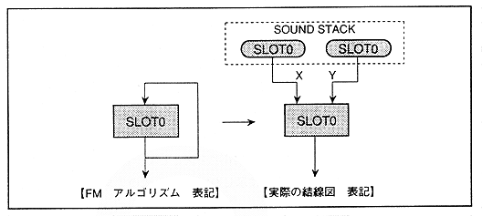

(1) Parameter
to be set in slot 0
Figure 4.34 Slot 0 algorithm

∙ For the self-feedback type configuration like slot 0, it is necessary to connect the sound stack storing the output data of slot 0 to X and Y of the modulation input.
Since the sound stack has the latest sample and the past sample for the sample currently being calculated, the modulation input X and Y input the latest sample or the past sample in both, or the latest sample in one side and the past sample in the other side. There are 3 ways to input.
* Note
However, in the case of self-feedback, if the same sample is input, it may oscillate, so please take the method of inputting the latest sample on one side and the past sample on the other side.
∙ The values of MDXSL and MDYSL are 0 for both the slot to be modulated and the slot to be modulated.
0-0 = 0
∙ This satisfies condition 3 of 4.1 formula, so the MSB of MDXSL and MDYSL is
At the time of the latest sample MSB = 1 (100000) B = 20 H In the past sample, MSB = 0 (000000) B = 00 H
It will be.